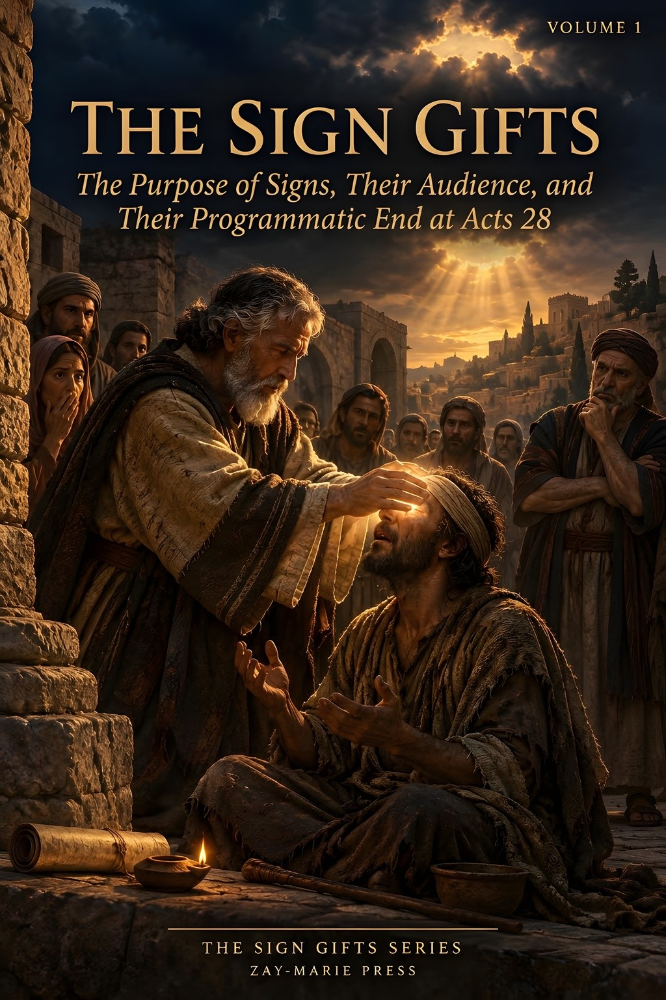
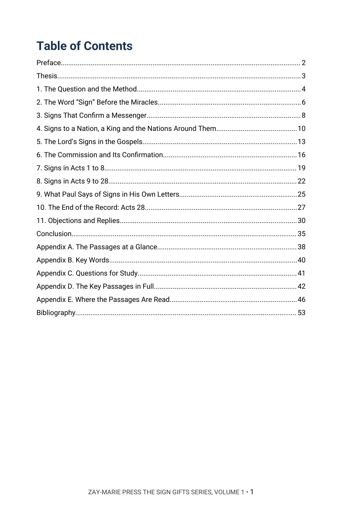
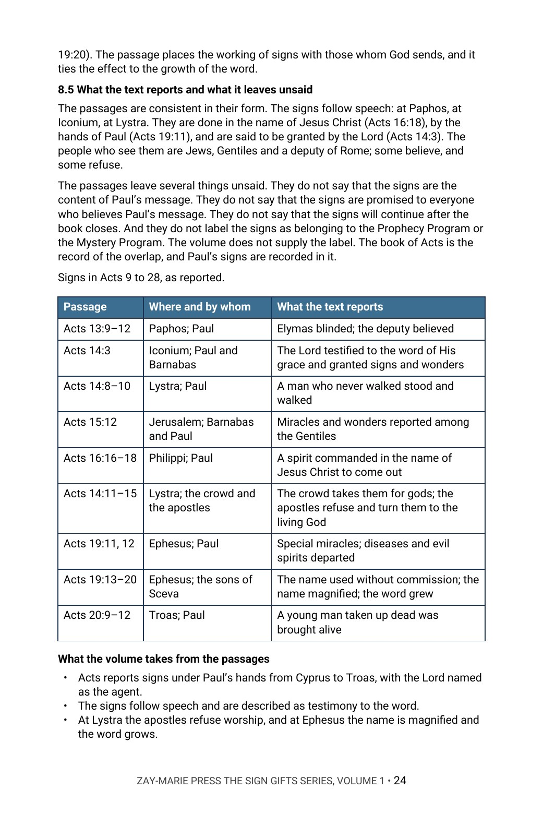
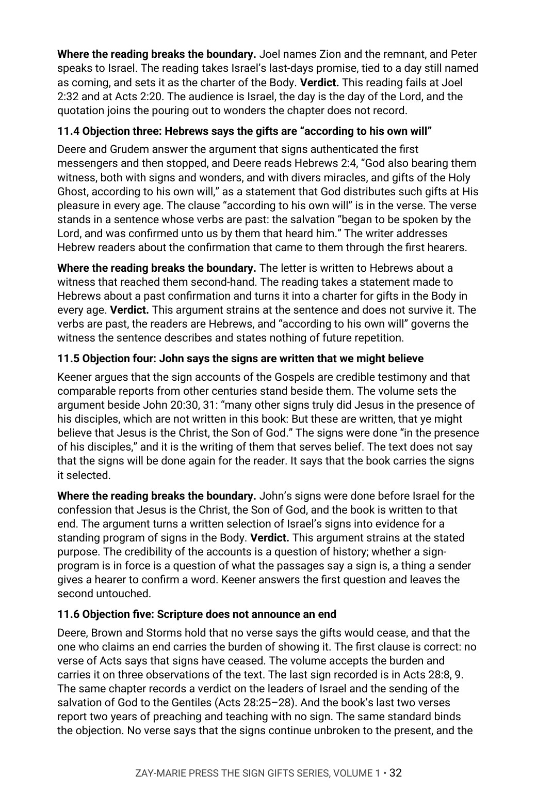

The Sign Gifts
The Purpose of Signs, Their Audience, and Their Programmatic End at Acts 28
What were signs for, to whom were they given, and what is the last sign the book of Acts records?
Scripture uses one set of words, sign, wonder, miracle and token, for what God does to mark a messenger, to move a nation and to answer a doubter. Moses before Pharaoh, the Lord in Galilee, Peter in Solomon’s porch and Paul on Malta each stand in a passage that names a giver, a hearer and a purpose. Are these one thing?
It argues that the signs belonged to Israel’s line, given to a hearer to confirm a messenger’s word, that the last sign Acts records is the healing on Malta in chapter 28, and that signs do not continue into the Mystery. In Chapter 11 it sets its reading beside modern writers who hold that the gifts continue and others who hold that they ended, and rules on each.
New to the framework? The Digital Studies teach the distinctions this volume relies on. Start with the Digital Studies →
A Commentary That Argues a Position
This volume does not list the views held on the sign gifts and leave the choice to the reader. It says what the author believes the passages state: what a sign is, whom it was given to, what it was set to prove and where the record of signs ends. It gives the evidence from the passages and rules on the strongest objections by name.
It is the first volume of The Sign Gifts Series, each volume of which is built around one narrower question about the signs of Scripture. This volume asks what signs were for, to whom they were given and where the record of them ends. More volumes will follow. It is a different kind of book from the Digital Studies, which report what a passage says. Scripture is quoted from the King James Version throughout, checked word for word, and the writers named in Chapter 11 are described from their published works and are not quoted.
Related Reading
Digital Studies
Study 25 — The Signs That Followed Reports what Mark 16 says of signs and the textual question of its last verses; this volume reads the commission only for its audience and the tense of its confirmation.
Study 38 — Why Acts Is Not a Universal Experience Manual Reads Acts as inspired history that is not a command for every believer; this volume asks only what the signs in Acts were for and where the record of them ends.
Study 81 — Praying in the Spirit Reports what the passages say of praying in the Spirit and speaking in tongues; this volume does not treat that question.
Bible Book Companion Series
Bible Book Companion — Acts Interprets the book of Acts through its key passages.
Bible Book Companion — Exodus Interprets the book of Exodus through its key passages.
Bible Book Companion — John Interprets the book of John through its key passages.
Commentary Series
Acts Commentary Series, Volume 2 — The Spirit in Acts: Pentecost to Ephesus Argues the Spirit scenes in Acts from Pentecost to Ephesus; this volume cites them only as signs in the record.
Acts Commentary Series, Volume 5 — Acts 28: The Close of the Book Argues the national suspension at Acts 28; this volume argues that the last sign in the record falls in the same chapter.
Gospel Commentary Series, Volume 2 — The Lord’s Ministry to Israel Argues the Lord’s ministry to Israel; this volume reads His signs only for whom they were given to and what they were set to prove.
From the Word “Sign” to the End of the Record
The Word “Sign”
Trace “sign,” “token,” “wonder” and “miracle” through Exodus and the prophets, and mark who gives each one, who receives it and what it is set to prove.
Messenger Signs
Follow Moses before Pharaoh and Israel, the signs of the prophets and the Lord’s own signs, and see what each one confirms.
The Commission
Read Mark 16, Matthew 10, Luke 10 and Hebrews 2 in order, tracing the audience and the tense of each.
Signs in Acts
Walk Acts 1 to 8 and Acts 9 to 28 passage by passage, recording who works each sign, before whom, and what the book leaves unsaid.
Paul’s Own Letters
Read 2 Corinthians 12:12, the illnesses of Paul’s companions, and the word “sign” in Romans and 2 Thessalonians.
The End of the Record
Read Acts 28 from Malta to the last two verses, then weigh modern writers on both sides of the question and the ruling on each.
Read the Word in Its Context
Exodus 4:5
“That they may believe that the LORD God of their fathers, the God of Abraham, the God of Isaac, and the God of Jacob, hath appeared unto thee.”
John 20:31
“But these are written, that ye might believe that Jesus is the Christ, the Son of God; and that believing ye might have life through his name.”
Acts 2:22
“Ye men of Israel, hear these words; Jesus of Nazareth, a man approved of God among you by miracles and wonders and signs, which God did by him in the midst of you, as ye yourselves also know:”
Mark 16:20
“And they went forth, and preached every where, the Lord working with them, and confirming the word with signs following. Amen.”
Hebrews 2:4
“God also bearing them witness, both with signs and wonders, and with divers miracles, and gifts of the Holy Ghost, according to his own will?”
2 Corinthians 12:12
“Truly the signs of an apostle were wrought among you in all patience, in signs, and wonders, and mighty deeds.”
Acts 28:9
“So when this was done, others also, which had diseases in the island, came, and were healed:”
Acts 28:28
“Be it known therefore unto you, that the salvation of God is sent unto the Gentiles, and that they will hear it.”
What This Book Sets Out to Do
A sign in Scripture is given to someone and for something.
Each passage names a giver, a hearer and a purpose. The volume reads every sign the same way, who gave it, who received it and what it was set to prove, before it says what any of them mean together.
Preview the Volume Before You Purchase
Click any page to enlarge it for reading.


Table of Contents
See the full order of the argument, from the Preface to the Bibliography.



The Argument at Work
See the method: the signs in Acts 9 to 28 set out in a table, with what the text reports and what it leaves unsaid.


Objections and Replies
See modern writers named on both sides, each position stated, and the ruling on each objection.
A Full Commentary on The Sign Gifts
55-Page Digital PDF
Cover and a fully numbered interior.
Eleven Chapters
From the question and the method to the end of the record in Acts 28 and the objections and replies.
Objections and Replies
Modern writers named on both sides, each objection ruled on from the text.
Passage by Passage
Exodus, the prophets, the Gospels, Acts, Paul’s letters and Hebrews read in order, with what each leaves unsaid.
Comparison Tables
The messenger signs, the Lord’s signs, the commission and the signs in Acts set side by side.
Conclusion
The position restated in full, with a closing table.
Five Appendices
The passages at a glance, key words, questions for study, the key passages in full and a verse-by-verse index of where the passages are read.
Bibliography
Every work cited, listed by author and title.
The Sign Gifts
55-page digital PDF · For personal use